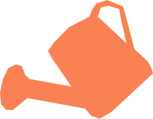

«Хочу сделать дом своим»
Только переехал и хочешь живое рядом — но боишься, что всё погибнет. Кресс-салат не погибнет: мы проведём за руку шаг за шагом.

Мы создаём живую еду
с теми, кто готов отказаться от пластиковой зелени
из супермаркетов, кто не боится начать
свой мини-сад на подоконнике и хочет видеть настоящую науку роста каждый день прямо у себя на кухне.
«Хочу сделать дом своим»
Только переехал и хочешь живое рядом — но боишься, что всё погибнет. Кресс-салат не погибнет: мы проведём за руку шаг за шагом.
«Ребёнок хочет питомца»
Осязаемый результат, который ребёнок вырастил сам и съел. Лучший педагогический момент — без ветеринаров и шерсти.
«Надо что-то живое рядом»
Сессия, дедлайны, общага. 10 минут в день — и уже лучше.
«Хочу свежую зелень»
Срезаешь ровно сколько нужно — прямо с подоконника. Не пучок из магазина, который гниёт на третий день.
«Хочу заземляющее хобби»
Пора выдохнуть. Просто живой зелёный островок посреди твоего хаоса, который растёт сам прямо на подоконнике.
Только переехал и хочешь живое рядом — но боишься, что всё погибнет. Кресс-салат не погибнет: мы проведём за руку шаг за шагом.
Каждый день — одна короткая задача. Никакого опыта не нужно: следуй шагам и отмечай выполненное.
Кресс-салат готов. Кинь в яичницу, на тост или в суп. Острый, бодрящий — твой.
Сорт Крупнолистовой. Быстро прорастают, насыщенный вкус.
Специальный субстрат — держит влагу и пропускает воздух к корням.
Компактный, умещается на любом подоконнике. Горшок не нужен.
Нет. Приложение ведёт пошагово каждый день — от посева до срезки. Единственное что нужно — открывать раз в день.
Около 5–10 минут в день. Полив и проверка — и всё. Кресс-салат не требует постоянного внимания.
Первые ростки появляются на 3–4 день. Готов к срезке кресс-салат — на 10-й день после посева.
Пишем в Telegram или WhatsApp, договариваемся о доставке. Доставка уже включена в стоимость набора.
Напишите нам на help.rutis@mail.ru — разберёмся вместе. Пришлём новые семена или поможем выяснить причину.
990 ₽ · доставка включена · результат за 10 дней
Мы только запускаемся и собрали вручную первые 7 наборов для заземления. Хочешь стать одним из первых? Оставь свои контакты в форме ниже. Мы напишем тебе лично в Telegram или WhatsApp, ответим на вопросы и бережно доставим твой мини-сад.
Заказать